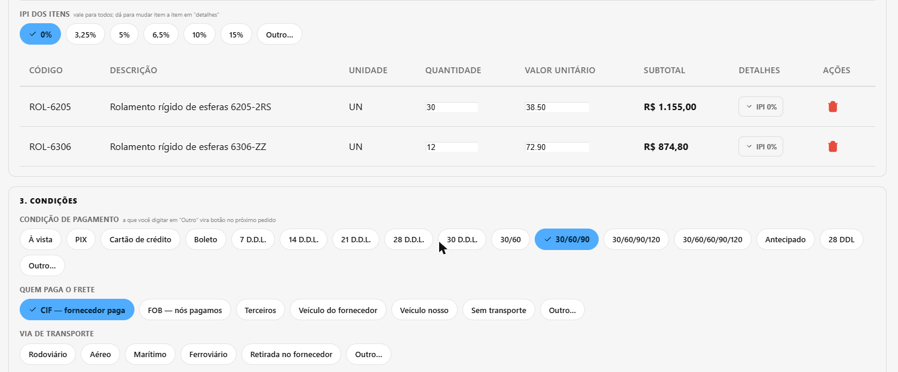
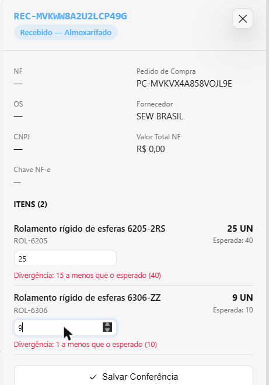
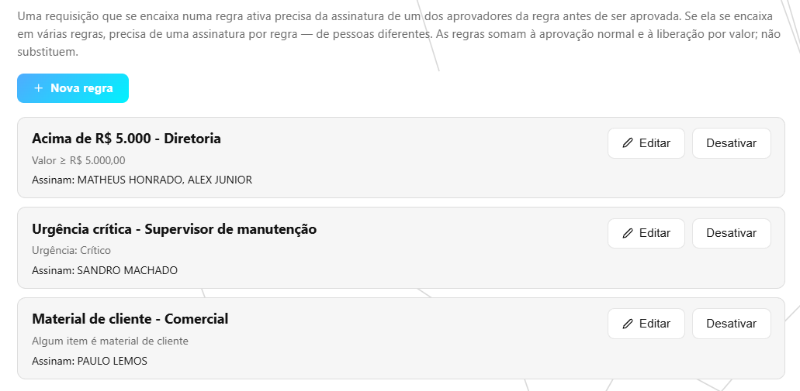
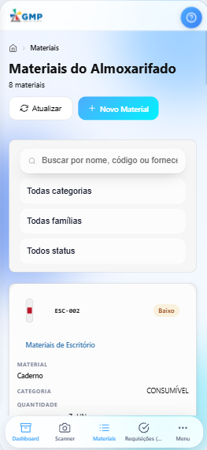

Resumo do mês — setembro de 2026
01/09 a 30/09/2026 · CRM GMP Industriais
Em setembro, o caminho da compra passou a ser feito inteiro dentro do sistema: fornecedor, cotação, pedido de compra, recebimento conferido e o problema com o material registrado como documento, com decisão e responsável. O sistema passou a funcionar no celular como aplicativo, e o almoxarifado ganhou regras de aprovação, a Fila de separação e a indicação de qual prateleira cada item sai e para qual entra. Por baixo, a mesma nota fiscal deixou de entrar duas vezes, o material que chega passou a ficar com quem estava esperando por ele e os arquivos guardados deixaram de abrir sem login. Foram cerca de 69 horas de trabalho, concentradas no celular, no caminho da compra até a chegada do material e no tratamento do material com defeito.
Horas do mês
Cerca de 69 horas de desenvolvimento no mês.
Horas por semana
| Semana | Horas no mês |
|---|---|
| 01/09 a 05/09 (sem relatório semanal) | 9 h |
| 06/09 a 12/09 (sem relatório semanal) | 1 h |
| 13/09 a 19/09 | 25 h |
| 20/09 a 26/09 | 14 h |
| 27/09 a 30/09 (a semana vai até 03/10; os dias de outubro contam no mês de outubro) | 20 h |
| Total do mês | 69 h |
Horas por atividade
| Atividade | Horas |
|---|---|
| O sistema no celular, como aplicativo, em todas as telas | 16 h |
| Não Conformidades: documento, decisão, devolução ao fornecedor e sucateamento | 10 h |
| Recebimento: conferência física, recebimento em partes, nota repetida e pedido que se fecha sozinho | 9 h |
| Pedido de compra: criar, acompanhar o atraso, datas e exclusão | 9 h |
| Documentos anexados e arquivos que só abrem com login | 7 h |
| Prateleiras, separação, entrega e relatórios novos do almoxarifado | 6 h |
| Fornecedores e cotações com tela própria, e a cotação que vira pedido | 4 h |
| Propostas e catálogo de produtos | 3 h |
| Telas que escondiam a falha da internet ou mostravam o registro errado | 3 h |
| Regras de aprovação e número da OS obrigatório na requisição | 2 h |
| Total | 69 h |
Quase um terço do tempo foi direto nas telas que você usa, a maior parte no celular. Outro terço foi nas conferências automáticas: são robôs que repetem centenas de situações a cada mudança — a nota lançada duas vezes, a internet que cai, o pedido recebido em três partes, duas pessoas mexendo no mesmo material ao mesmo tempo — para que o que já funciona não quebre escondido. Foi assim que apareceram, antes de chegar a quem usa, um recebimento que entrava com preço zero, a peça boa sucateada no lugar da ruim e a prateleira que continuava cheia depois da entrega. O resto foi planejar cada mudança e atualizar os manuais. O começo do mês teve poucas horas; o grosso do trabalho ficou da metade do mês em diante.
As horas são estimadas pelo registro do trabalho salvo ao longo do mês. Pesquisa, conversas e testes feitos à mão não entram — o número real é maior.
O que mudou no mês
Pedido de compra
O botão “Novo Pedido” não abria nada, e o pedido era feito fora do sistema. Agora ele é montado na tela, quase todo por botões, com o número gerado sozinho e lançamento em lote pela tecla F2. A solicitação de reposição do almoxarifado vira pedido com um clique. Pedido vencido aparece em vermelho, com “Atrasado há 12 dias”, e o Compras recebe um e-mail por dia para cada pedido atrasado.

Fornecedores e cotações
Os botões “Novo Fornecedor” e “Nova Cotação” passaram a abrir a ficha de cada um, e o fornecedor pode ser marcado como inativo. A cotação guarda os itens cotados, com o total somado sozinho. Aprovada, ela vira pedido de compra com um clique, já com fornecedor, itens e preços — e a mesma cotação não vira dois pedidos, nem com clique duplo.

Recebimento
Cada item do recebimento mostra quanto era esperado e tem onde anotar a contagem física; se não bate, a tela avisa na hora. O pedido pode ser recebido em partes, e se fecha sozinho quando a última remessa chega. A mesma nota fiscal não entra duas vezes, e o material que chega fica guardado para quem estava esperando por ele, na ordem da fila, com aviso por e-mail.

Não Conformidades
Quando chega menos do que a nota diz, ou a inspeção reprova um lote, o problema vira um documento numerado, com quem decidiu, quando e por quê, e espaço para laudo e foto. A decisão faz o que diz: aceitar devolve o material ao estoque, devolver ao fornecedor espera a saída de fato e sucatear baixa só o material reprovado. Documento parado sem decisão aparece em Alertas.

Requisição e aprovação
A requisição de material só é enviada com o número da OS, para saber depois em qual serviço cada material foi usado. O administrador cadastra regras dizendo quando a requisição precisa de assinatura e de quem — por valor, urgência, material crítico ou centro de custo. Quem aprova vê o quadro do que está esperando por ele, e quem falta assinar é cobrado por e-mail.

Separação, entrega e prateleiras
A Fila de separação mostra só as requisições com trabalho, na ordem em que devem ser feitas, e diz o que fazer em cada uma. Ao separar e entregar, cada item diz de que prateleira e de que lote sai, e a peça com número de série pede quais números saem. Na entrada, o sistema sugere onde guardar, e cada prateleira ganhou etiqueta com QR. Entraram também relatórios como Saldo por lote e Localizações vazias.

Documentos anexados
Certificado do fornecedor, ficha técnica, nota escaneada e comprovante de devolução ficavam no e-mail ou numa gaveta. Agora ficam presos ao registro certo — inspeção, material, requisição, recebimento, devolução e remessa a terceiros. E os arquivos do almoxarifado, que abriam para qualquer pessoa que tivesse o link, passaram a abrir só por dentro do sistema, com login.

O sistema no celular
O sistema se instala no celular como aplicativo, com o ícone da empresa e a navegação numa barra embaixo, ao alcance do polegar. Toda tabela vira uma lista de cartões, com o que importa em destaque e botões com nome. Propostas, Dashboard e Clientes foram refeitos para a tela pequena, e as 126 telas do sistema foram percorridas no celular até não sobrar nada saindo da tela. No computador, nada mudou.

Também no mês, nas propostas e no catálogo de produtos: o administrador ganhou o botão “Clonar” em famílias e produtos, para cadastrar um item muito parecido sem refazer tudo; trocar o modelo de um produto passou a atualizar o código dele; o PDF da proposta passou a sair com o nome do cliente no arquivo; e cada item da proposta passou a aceitar acessórios escritos na hora, com preço próprio embutido no valor do item e listados no descritivo.
Relatórios das semanas
- 13/09 a 19/09 — pedido de compra feito no sistema, recebimento com conferência física e o sistema no celular como aplicativo (pasta 2026-09-13_a_2026-09-19)
- 20/09 a 26/09 — fornecedores e cotações com tela própria, a cotação que vira pedido e o celular com cara de aplicativo em todos os módulos (pasta 2026-09-20_a_2026-09-26)
- 27/09 a 03/10 — Não Conformidades, Fila de separação, regras de aprovação e o material que chega ficando com quem esperava por ele (pasta 2026-09-27_a_2026-10-03)
As semanas de 01/09 a 05/09 e de 06/09 a 12/09 não têm relatório semanal; o que foi feito nelas está neste resumo.